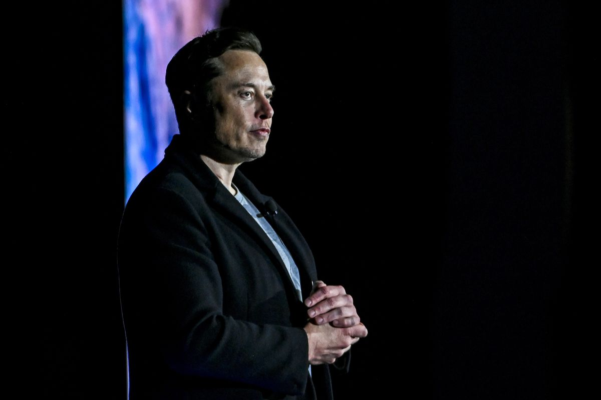
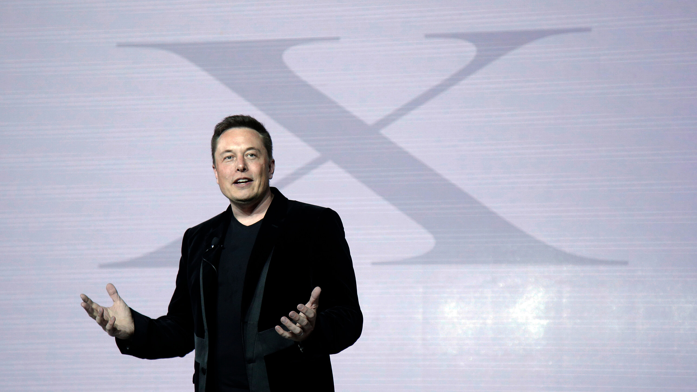
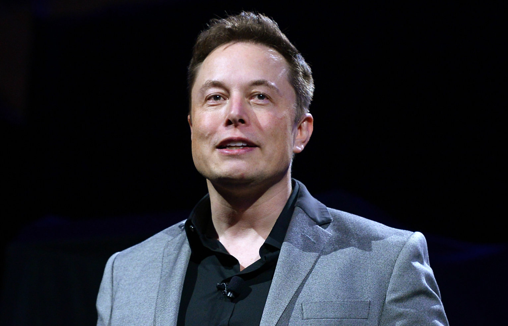

Elon Reeve Musk FRS (Pretória, 28 de junho de 1971) é um empreendedor e filantropo sul-africano-canadense naturalizado norte-americano.
Ele é o fundador, diretor executivo e diretor técnico da SpaceX; CEO da Tesla, Inc.; vice-presidente da OpenAI, fundador e CEO da Neuralink; co-fundador e presidente da SolarCity.
Em 7 de janeiro de 2021, com um patrimônio pessoal estimado em cerca de 188,5 bilhões de dólares, tornou-se a pessoa mais rica do mundo, de acordo com a Bloomberg, ultrapassando o empresário Jeff Bezos. No ranking da Forbes, Musk ocupa em 2022 no primeiro lugar.
Em janeiro de 2011, uma de suas empresas, a SpaceX, tornou-se a primeira empresa no mundo a vender um voo comercial à Lua. A missão, marcada para 2013, foi contratada pela empresa Astrobotic Technology, tendo como objectivo colocar um pequeno jipe na superfície lunar, o que não aconteceu.
Em 2012, encerrou o projeto do Tesla Roadster, o primeiro modelo da sua autoria, um carro totalmente elétrico que custava cerca de 92 mil dólares. A Tesla já lançou quatro modelos: S, Y, X e o Modelo 3, este último com a responsabilidade de trazer os carros elétricos para as massas, partindo de um custo inicial de 35 mil dólares.Em 25 de abril de 2022, ele também concordou em comprar o Twitter por 44 bilhões de dólares.
Como Elon Musk construiu sua fortuna?
O empresário investiu mais da metade de seus ganhos no cofundador do X.com, um serviço de pagamentos online. A empresa se fundiu com sua principal rival e se tornou o PayPal, com Elon como acionista majoritário. Em 2002, o eBay comprou o PayPal, o que rendeu lucro de US$ 180 milhões ao empresário.
Tesla Motors
Uma empresa que desenvolve e produz carros elétricos e baterias, a Tesla Motors é mais um projeto de Musk que pretende dar fim a supremacia do motor a combustão interna e, consequentemente, diminuir os efeitos do aquecimento global.Com foco nos sedans e nos utilitários esportivos, em 2017, se tornou a montadora mais valiosa dos Estados Unidos, ultrapassando gigantes como a General Motors e a Ford, ainda que possua menor número de vendas e presença internacional.
A Tesla lançou, em 2018, o primeiro carro elétrico considerado relativamente acessível, o Model 3, por US$ 35 000. Entretanto, a empresa tem mostrado dificuldade em cumprir as metas de produção e, portando, suprir a demanda dos clientes. Elon Musk classificou esse cenário como "production hell".
O CEO assumiu a culpa, mas disse que trata-se apenas de um contratempo, causado principalmente por uma tentativa falha de automação quase total das indústrias em que o Model 3 é fabricado.
Nesse cenário, a The Economist chegou a noticiar que a Tesla precisaria de um financiamento de US$ 2,5 bilhões para manter suas operações. Musk, porém afirmou que a empresa se tornará lucrativa ainda em 2018, portanto a análise da revista estaria equivocada.